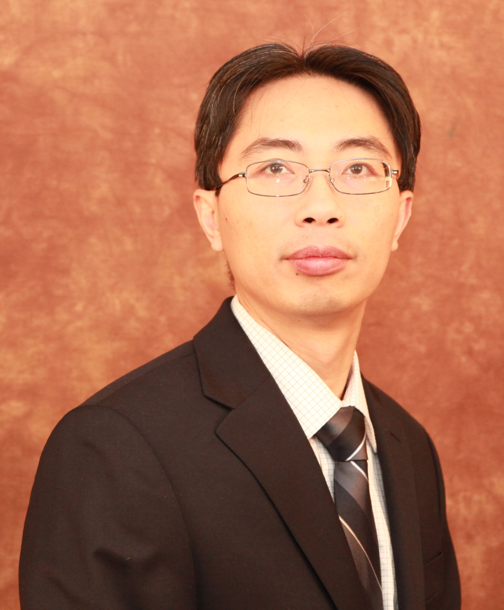
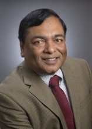
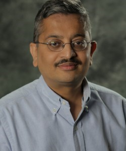
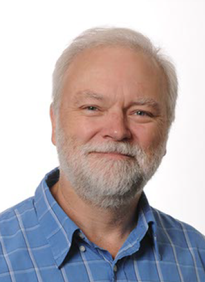

|


Sponsored By:


Student Travel Grant Sponsor:

Industry Sponsors:

|
Download the Luncheon Keynote 1: Yan Solihin's slides
Download the Morning Keynote 2: Sandip Kundu's slides
Download the Luncheon Keynote 2: Shekhar Bhansali's slides
Morning Keynote 1: Monday, 07/15/2019
Systems – An NSF Perspective
Samee U. Khan

North Dakota State University and National Science Foundation
Abstract
We are part of interesting times in which systems (compute, network, and storage) are rapidly evolving. These systems are the enablers for concepts of Smart Cities, Understanding the Human Brain, Humanoid Robots, Human Health, Fully Automated Data-driven Decision Systems, etc. This talk will describe NSF activities related to advancing systems and will include some personal observations on challenges and opportunities for the research community.
Short Bio
Samee U. Khan received a PhD in 2007 from the University of Texas, Arlington, TX, USA. Currently, he is the Lead Program Director (Cluster Lead) for the Computer Systems Research at the National Science Foundation. He also is a faculty at the North Dakota State University, Fargo, ND, USA. His research interests include optimization, robustness, and security of computer systems. His work has appeared in over 400 publications. He is on the editorial boards of leading journals, such as ACM Computing Surveys, IEEE Access, IEEE Communications Surveys and Tutorials, IET Wireless Sensor Systems, IET Cyber-Physical Systems, and IEEE IT Pro. He is an ACM Distinguished Speaker, an IEEE Distinguished Lecturer, a Fellow of the Institution of Engineering and Technology (IET, formerly IEE), and a Fellow of the British Computer Society (BCS).
Luncheon Keynote 1: Monday, 07/15/2019
Challenges and Approaches for Future Secure Execution Environment Design
Yan Solihin

Charles N. Millican Chair Professor of Computer Science at University of Central Florida
Abstract
Abstract: Trustworthy software execution is increasingly demanded in multiple situations, including the cloud computing environment where customers execute their software in cloud servers, and in edge computing where computing may be performed on the edge nodes. Customers require strong privacy and security guarantees from a secure trust base in hardware. Recognizing this, chipmakers recently introduced secure execution environment, such as Intel SGX and AMD SEV. A key component of secure execution environment is memory encryption and integrity verification. In this talk, I will give an overview of key milestones in memory encryption and integrity verification technologies. Then, I will discuss how these technologies are not adequate in providing secure execution environment in the future, for several reasons. First, the threat model is incomplete. The pervasiveness of side channel vulnerabilities and attacks in both cloud servers and edge nodes can bypass the protection provided. Second, these technologies are not compatible with new persistent (or non-volatile) memory technologies that are coming online. I will approaches for designing future secure execution environment given the new challenges.
Short Bio
Yan Solihin is a Charles N. Millican Chair Professor of Computer Science and Director for Cybersecurity and Privacy Cluster at the University of Central Florida. Prior to joining UCF, he was a Program Director at the National Science Foundation, with responsibilities in managing the Computer Systems Research (CSR) cluster, Scalable Parallelism in the eXtreme (SPX), and Secure and Trustworthy Cyberspace (SaTC), among others. He was also Professor of Electrical and Computer Engineering at NCSU from 2002 to 2018. In 2017. he was elected as an IEEE Fellow, recognized "for contributions to shared cache hierarchies and secure processors.”
He obtained his B.S. degree in computer science from Institut Teknologi Bandung in 1995, B.S. degree in Mathematics from Universitas Terbuka Indonesia in 1995, M.A.Sc degree in computer engineering from Nanyang Technological University in 1997, and M.S. and Ph.D. degrees in computer science from the University of Illinois at Urbana-Champaign in 1999 and 2002. He is a recipient of 2010 and 2005 IBM Faculty Partnership Award, 2004 NSF Faculty Early Career Award, and 1997 AT&T Leadership Award. He is listed in the ISCA and HPCA Hall of Fame. His research interests include computer architecture, memory hierarchy design, non-volatile memory architecture, programming models, and workload cloning. He has published more than 70 papers in computer architecture and performance modeling, and authored 40+ patents. He has released several software packages to the public: ACAPP - a cache performance model toolset, HeapServer - a secure heap management library, Scaltool - parallel program scalability pinpointer, and Fodex - a forensic document examination toolset. He has written two graduate-level textbooks, including Fundamentals of Parallel Multicore Architecture, CRC Press, 2015.
Morning Keynote 2: Tuesday, 07/16/2019
Can you trust your machine learning system?
Sandip Kundu

National Science Foundation and University of Massachusetts at Amherst
Abstract
Extensive integration of machine learning (ML) into critical applications like finance or healthcare demands an investigation of security of ML systems against malicious attacks. The various stages of the machine learning process, from data collection to model deployment present multiple avenues of attack that can compromise the integrity of a system. In this talk, we examine the three fundamental pillars of information security, namely, confidentiality, integrity and availability, with the machine learning process and categorize the various attacks against the three pillars. Confidentiality of an ML system involves securing it against exposure of the model parameters via the observation of responses and also, securing the original training dataset. Ensuring integrity of machine learning systems is a difficult task, but is crucial to prevent exploitation by adversaries. We conclude the talk with a discussion of potential defenses and a brief examination of future concerns.
Short Bio
Sandip Kundu is a Program Director at the National Science Foundation in the CNS division within the CISE directorate. He is serving in this position on leave from the University of Massachusetts at Amherst, where he is a professor in Electrical and Computer Engineering Department. Kundu began his career at IBM Research as a Research Staff Member; then worked at Intel Corporation as a Principal Engineer before joining UMass Amherst as a professor in 2005. He has published over 250 research papers in VLSI design and test, holds several key patents including ultra-drowsy sleep mode in processors, and has given more than a dozen tutorials at various conferences. He is a Fellow of the IEEE, Fellow of the Japan Society for Promotion of Science (JSPS), Senior International Scientist of the Chinese Academy of Sciences and was a Distinguished Visitor of the IEEE Computer Society. He has served as an Associate Editor of the IEEE Transactions on Computers, IEEE Transactions on Dependable and Secure Computing, IEEE Transactions on VLSI Systems and ACM Transactions on Design Automation of Electronic Systems. He has been Technical Program Chair/General Chair of multiple conferences including ICCD, ATS, ISVLSI, DFTS and VLSI Design Conference.
Luncheon Keynote 2: Tuseday, 07/16/2019
VLSI in the era of internet of things … and sensors
Shekhar Bhansali

Department of Electrical and Computer Engineering, Florida International University, USA
Abstract
The expected 4th technical revolution will be driven with connected devices and sensors. Key to this transformation is the cost of sensors and devices. This talk present an overview of one such system a wearable sensor. It then articulates the needs for low cost, low speed, low complexity, low power (V)LSI and then explores whether VLSI will be the driver or the bottleneck for the 4th industrial revolution.
Short Bio
Dr. Shekhar Bhansali currently serves as the Alcatel-Lucent Professor and Chair of the Department of Electrical and Computer Engineering at Florida International University (FIU), Miami, FL. His current research is in the areas of bio-sensing and bioengineering, oceanographic sensing, materials science, micro/nanotechnology and alternative energy. He has 36 U.S. Patents, edited two (2) books and published over 300 research articles. His research has been supported by the National Science Foundation (NSF), National Institutes of Health (NIH), industry (SRI, Draper and JCG) and national laboratories. He is a Fellow of National Academy of Inventors and has received numerous awards including FIU’s Top Scholar Award in 2014, William R. Jones Outstanding Mentor Award from the Florida Education Fund in 2009 and 2011, Mentor of the Year Award from Alfred P. Sloan Foundation in 2009 and 2003 NSF CAREER award.
Dr. Bhansali has conceptualized and led a number of interdisciplinary graduate student research and training programs, including NSF-IGERT, NSF Bridge to Doctorate and Alfred P. Sloan Doctoral Fellowship Programs to increase diversity, retention and graduation rates. Through these programs, he oversaw the education of over 200 graduate students with multiyear fellowships in colleges of Engineering, Arts and Sciences, and Medicine. Dr. Bhansali is on the editorial boards of ISSS Journal of Micro and Smart Systems.
Dr. Bhansali received his doctoral degree in Electrical Engineering from RMIT University in Melbourne, Australia; his master’s degree in Aircraft Production Engineering from the Indian Institute of Technology, Madras in Chennai, India; and his bachelor’s degree with Honors in Metallurgical Engineering from the Malaviya Regional Engineering College in Jaipur, India.
Morning Keynote 3: Wednesday, 07/17/2019
Is Moore’s law ending and would it matter if it did?
Rob Aitken

Fellow, ARM Research
Abstract
The demise of Moore’s law has been predicted for decades, but over the last few years the pessimists have been able to point to rapidly approaching physical limits, skyrocketing chip development costs, and delays in process availability to support their argument. At the same time, however, new technologies are emerging, especially in memory and various forms of 3D stacking, and new architectures are being proposed, especially for machine learning and related problems. Meanwhile, both trends are causing previous challenges such as security, safety, and reliability to move to the forefront as key design issues. We clearly live in exciting times, but where will all this lead? This talk examines the present and looks at ways the future is unfolding and how it might continue to evolve.
Short Bio
Rob Aitken is an ARM Fellow and technology lead for ARM Research. He is responsible for technology direction of ARM research, including identifying disruptive technologies, monitoring the global technology landscape, and coordinating research efforts within and outside of ARM. His role includes developing strategic relationships with universities, consortia, and other key participants in the global research community. His research interests include emerging technologies, memory design, design for variability, resilient computing, and statistical design. He has published over 80 technical papers on a wide range of topics including impacts of technology scaling, statistics of memory bit cell variability and the use of static current monitoring as a circuit testing and diagnostic mechanism. He holds 30 US patents. Dr. Aitken joined ARM as part of its acquisition of Artisan Components in 2004. Prior to Artisan, he worked at Agilent and HP. He has given keynote addresses, tutorials and short courses at conferences and universities worldwide. He holds a Ph.D. from McGill University in Canada. Dr. Aitken is an IEEE Fellow, and serves as General Chair for the 2019 Design Automation Conference.
3:40pm ~ 4:40pm, Tuesday July 16, 2019
Ballroom B
Hardware Intellectual Property (IP) Protection Techniques: Myth or Reality
-
Chair & Moderator
Jeyavijayan Rajendran - Texas A&M University
Gang Qu – University of Maryland
Panelists
Rob Aitken, ARM Research
Siddharth Garg, NYU Tandon School of Engineering
Sandip Kundu, National Science Foundation
Ankur Srivastava, University of Maryland
Summary
The fabless business model has given rise to many security threats including piracy of intellectual property (IP), overproduction, counterfeiting, reverse engineering (RE), and hardware Trojans (HT), severely undermining the benefits of the fabless model. Of these problems, protecting the IP has gained a special interest from the industry and government agencies as one wants to hide their “crown jewels” of hardware design. To this end, academia has developed a slew of techniques, companies are offering tools and services, and government agencies run research programs.
This panel will discuss the following:
- (a) Is the IP protection problem a real or a myth?
- (b) What are the state-of-the-art techniques? Do they deliver what has been promised?
- (c) How much is the industry willing to pay?
- (d) What are the outstanding challenges?


This site is maintained by:
ISVLSI 2019 Web Chair
|